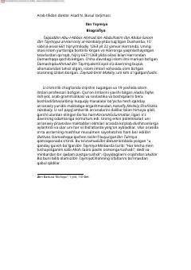

AAIbn Taymiyaning islom e'tiqodi va aqida asoslarini yorituvchi muhim asari.
Ushbu asar mashhur islom olimi Ibn Taymiyaning e'tiqod masalalariga bag'ishlangan fundamental kitoblaridan biridir. Unda Allohning sifatlari, Qur'on va Sunnatga asoslangan sof islomiy aqida tamoyillari bayon etilgan.